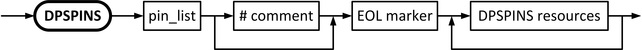

DPSPINS
Each DPS pin definition is introduced by the DPSPINS keyword and has the following global syntax:

pin_list |
The name of the pin or pins to which the DPSPINS resources block is to be applied. |
Example
Example 1: Copy/paste example with all resource keywords
EQNSET 1 "Example equation set 1"
DPSPINS Example_DPS_pin
vout = 5.0 # [V] Forced output voltage
ilimit = 20.0 # [mA] Source and sink current limit
ilimit_source = 20.0 # [mA] Source current limit (DC Scale pins)
ilimit_sink = 10.0 # [mA] Sink current limit (DC Scale pins)
t_ms = 5.0 # [ms] Connect setup time
vout_rise_t_ms_per_volt = 0.1 # [ms/V] Inverse slew rate for the rising edge
vout_rise_t_ms_per_volt_c2c = 0.2 # [ms/V] Inverse "connect-to-connect" slew rate
vout_fall_t_ms_per_volt = 0.1 # [ms/V] Inverse slew rate for the falling edge
vout_fall_t_ms_per_volt_c2c = 0.2 # [ms/V] Inverse "connect-to-connect" slew rate
vout_rise_settling_t_ms = 0.5 # [ms] Settling time for the rising edge
vout_rise_settling_t_ms_c2c = 0.9 # [ms] "connect-to-connect" settling time
vout_fall_settling_t_ms = 0.5 # [ms] Settling time for the falling edge
vout_fall_settling_t_ms_c2c = 0.9 # [ms] "connect-to-connect" settling time
offcurr = act_min # act | min | open | act_min | act_open
# Defines current to apply in disconnected state
vout_frc_rng = 8.0 # [V] Force voltage range
iout_clamp_rng = 50.0 # [mA] Clamp current range
disable_const_curr_check # Switch off constant current check
ms_const_curr_disconnect = 10.0 # [ms] Delay for constant current flag (UHC4T + XPS256)
connect_state = ungang # norm (see note below) | himp | ungang |
# hdig (UHC4T) | hdig (UHC4T)
ms_fast_preload = 8.0 # [ms] Full current (40A) for the specified time (UHC4T)
max_voltage_drop_force = 3.0 # [V] Upper FS drop limit (UHC4T + XPS256)
max_voltage_drop_return = 3.0 # [V] Lower FS drop limit (UHC4T + XPS256)
protect # Current limiter (UHC4T)
voltage_filter_frequency = 2000.0 # [Hz] Force voltage or clamp voltage filter (XPS256))
current_filter_frequency = 2000.0 # [Hz] Force current or clamp current filter (XPS256))
#
# Parameters supported only by XPS256
#
capacitance = 100 # [uF] Specifies the load capacitance on the DUT board.
load_step_mode = std # std, fast
open_loop_protection = diode # diode, none
pulldown = on # on, off
voltage_slew_rate = 50 # [mV/us]
warn_voltage_drop_force = 0.3 # [V]
warn_voltage_drop_return = 0.2 # [V]
LEVELSET 1 "Example level set 1" # Dummy for this example: At least one level set needs to be specified
The copy/paste example above shows all available keywords for the DPS pin resources and the DPS modulation set. The example is not valid for all types of DPS and must be adapted to the really used DPS.
The default value norm of DPS pin resource connect_state can be selected for the conn state column in the DPS Setup window of the Level setup tool and can be programmed by the related command PSLR but cannot be programmed explicitly in the level setup equations. The parameter connect_state must be omitted to define the default value norm in the level setup equations.
Functional changes
- Introduced before SmarTest 6.3.2